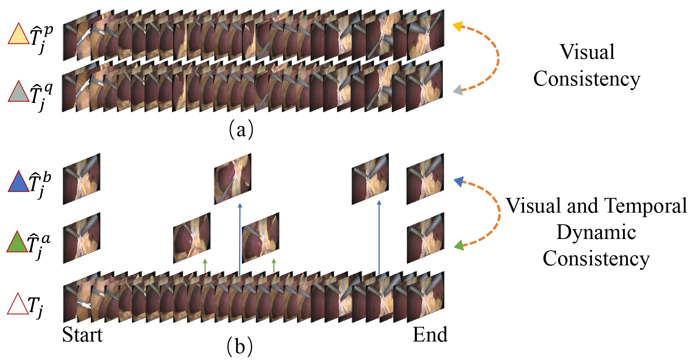

Selected Publications
|  | Semi-supervised Learning with Progressive Unlabeled Data Excavation for Label-efficient Surgical Workflow Recognition. Xueying, Shi, Yueming Jin, Qi Dou, Pheng-Ann Heng. in Medical Image Analysis, (MedIA), 2021. |
| Domain Adaptive Robotic Gesture Recognition with Unsupervised Kinematic-Visual Data Alignment. Xueying, Shi, Yueming Jin, Qi Dou, Jing Qin, Pheng-Ann Heng. in IEEE/RSJ International Conference on Intelligent Robots and Systems, (IROS), 2021. |
|
| LRTD: Long-Range Temporal Dependency based Active Learning for Surgical Workflow Recognition. Xueying, Shi, Yueming Jin, Qi Dou, Pheng-Ann Heng. in International Conference on Information Processing in Computer-Assisted Interventions (IPCAI), 2020. (Oral) |
|
| An active learning approach for reducing annotation cost in skin lesion analysis. Xueying, Shi, Qi Dou, Cheng Xue, Jing Qin, Hao Chen, and Pheng-Ann Heng. in International Workshop on Machine Learning in Medical Imaging (MLMI@MICCAI), 2019. |
|